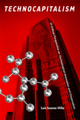

<body bgcolor="#FFFFFF" text="#000000" link="#0000FF" vlink="#CC0000" alink="#CC0000"><center><hr width="350" size="1" align="center" noshade>A radical critique of a new phase of capitalism grounded in corporate power and its exploitation of technological creativity<hr width="350" size="1" align="center" noshade><p><a href="https://cdcshoppingcart.uchicago.edu/Cart/ChicagoBook.aspx?ISBN=9781439900420&&PRESS=temple" target="_top">Buy this book!</a> | <a href="https://cdcshoppingcart.uchicago.edu/Cart/Cart.aspx?PRESS=temple" target="_top">View Cart</a> | <a href="https://cdcshoppingcart.uchicago.edu/Cart/Cart.aspx?PRESS=temple" target="_top">Check Out</a></p><p></p></center><!--none//--><h1>Technocapitalism</h1>
<H2>A Critical Perspective on Technological Innovation and Corporatism</H2>
<h3>Luis Suarez-Villa</h3>
<P>cloth 1-4399-0042-6 $60.50, Oct 09, <FONT COLOR=#990033>Available</FONT>
<br>paper 1-4399-0043-4 $31.95, Aug 12, <FONT COLOR=#990033>Available</FONT>
<BR> 230 pp
5.5x8.25
9&nbsp;figures
</P><BLOCKQUOTE><I>"In an era when technology is routinely treated as magical and liberatory, Luis Suarez-Villa has written the long overdue and necessary antidote to such flabby analysis and ludicrous self-congratulation. </i>Technocapitalism<i> is an outstanding book that should be read by all students, scholars and citizens who need to understand technology in the real world of capitalism and corporate power rather than the fairy tale world of the upper-middle class individuals doing their own thing in the sacred free marketplace. Our species faces extraordinarily serious issues in the coming generation, and an honest assessment of the political and economic forces around us is the necessary place to begin." <BR><B>&#151Robert W. McChesney</B>, Gutgsell Endowed Professor, University of Illinois at Urbana-Champaign</I></BLOCKQUOTE>
<p>A new version of capitalism, grounded in technology and science, is spawning new forms of corporate power and organization that will have major implications for the twenty-first century. Technological creativity is thereby turned into a commodity in new corporate regimes that are primarily oriented toward research and intellectual appropriation. This phenomenon is likely to have major social, economic, and political consequences, as the new corporatism becomes ever more intrusive and rapacious through its control over technology and innovation.
</p><p>
In his provocative book <i>Technocapitalism</i>, Luis Suarez-Villa addresses this phenomenon from the perspective of radical political economy and social criticism. Grounded in the premise that relations of power influence how human creativity and technology are exploited by the new corporatism, the author argues that new forms of democratic participation and resistance are needed, if the social pathologies created by this new version of capitalism are to be checked.
</p><p>
Considering the new sectors affected by technocapitalism, such as biotechnology, nanotechnology, bioinformatics, and genomics, Suarez-Villa deciphers the common threads of power and organization that drive their corporatization. These new sectors, and the corporate apparatus set up to extract profit and power through them, are imposing standards, creating business models, molding social governance, and influencing social relations at all levels. The new reality they create is likely to affect most every aspect of human existence, including work, health, life, and nature itself.</p>
<BR>&nbsp;<h2>Excerpt</h2><P>Excerpt available at <a href="http://www.temple.edu/tempress">www.temple.edu/tempress</a></p>
<BR>&nbsp;<h2>Reviews</h2>
<P><i>"Suarez-Villa has created a highly original work, carefully crafted and well-written. This is a sweeping and grand theoretical analysis of the post post-industrial iteration of capitalism that he terms 'technocapitalism'. The synthesis of literatures is very impressive but the work goes well beyond synthesis to create new arguments and paradigms for understanding contemporary capitalism and its possible futures. The analysis is rooted in a strong humanism that embraces technological change whilst regretting the corporatist forces that shape its direction and manifestations. </i>Technocapitalism<i> represents an important contribution to the scholarly literature."</I> <BR><B>&#151Joel Bakan</B>, author/filmmaker of <i>The Corporation</i>, Professor of Law, University of British Columbia
<P><i>"</i>Technocapitalism<i> raises important critical perspectives about what Suarez-Villa finds to be the latest major stage of global capitalism. He gathers and analyzes several aspects of the social organization of technological change to provide a distinctive synthesis of literatures and arguments"</I> <BR><B>&#151Rick Wolff</B>, Professor Emeritus at the University of Massachusetts, Amherst, and a Visiting Professor at the New School University in New York
<p><i>"[A] largely theoretical account of where capitalism is headed in the modern industrial state.... The author argues that the new workforce of capitalism will shape the structure of the corporation, rather than workers adapting to the ideology of the firm. It is a bold and counter intuitive hypothesis." </i> <br>&#151<b><i>Contemporary Sociology</i></b>
<p><i>"Suarez-Villa�s book forms part of the wider debates on 'the network society', 'knowledge economy' and 'cognitive capitalism'.... [H]e incites the reader to rethink Marx�s labour theory of value and the dialectical relationship of technology and capitalism.... Suarez-Villa�s greatest achievement is how he navigates beyond the crude cyber-utopianism of Clay Shirky or the technophobia of Eugene Morozov. Instead he embraces technological change while pointing towards its dark underbelly.... Suarez-Villa�s book makes a unique contribution of some of today�s prescient fault lines." </i> <br>&#151<b><i>Marx & Philosophy Review of Books</i></b>
<BR>&nbsp;<P><p>&nbsp;&nbsp;<font color="#3152A5">Also available in e-book</font></p></P><BR>&nbsp;<br>
<h2>Contents</h2><P>
<p>Introduction
<p><b>Experimentalism</b>
<br>Society as Laboratory
<br>Accumulation and Power
<br>Experimentalism as System
<br>Conclusion
<p><b>Creativity as a Commodity</b>
<br>Creativity versus Commodification
<br>Utility and Value
<br>Reproduction and Commodification
<br>Commodification as Process
<br>Conclusion
<p><b>Networks as Mediators</b>
<br>Network Extent
<br>Hierarchies and Control
<br>Power and Inequity
<br>Change over Change
<br>Conclusion
<p><b>Decomposing the Corporation</b>
<br>Networks versus the Corporation
<br>Decomposition and Power
<br>Pathology of Decomposition
<br>Conclusion
<p><b>Experimentalist Organizations</b>
<br>Systematized Research Regimes
<br>Collaboration and Power
<br>Pathological Pursuits
<br>Conclusion
<p><b>Challenges</b>
<br>Downfall of Public Democracy
<br>Hegemony of Corporatism
<br>Empowering Creativity
<br>Rediscovering the Social
<p>Notes
<br>Index
</P><BR>&nbsp;<H2>About the Author(s)</H2>
<table><tr><td valign="top"><img src="/tempress/authors/2039_au1.gif" height="90" width="75"></td><td width="100%" valign="middle"><p><b>Luis Suarez-Villa</b> is Professor of Social Ecology and of Planning, Policy and Design at the University of California, Irvine, and a specialist in the political economy of technology, development, and corporate capitalism.</P></td></tr></table>
<BR><H2>Subject Categories</H2>
<p><A HREF="/tempress/business.html" TARGET="_top">Business/Economics</a>
<BR><A HREF="/tempress/science.html" TARGET="_top">Science</a>
<BR><A HREF="/tempress/political.html" TARGET="_top">Political Science and Public Policy</a>
</p>
<p align="center"><a href="https://cdcshoppingcart.uchicago.edu/Cart/ChicagoBook.aspx?ISBN=9781439900420&&PRESS=temple" target="_top">Buy this book!</a> | <a href="https://cdcshoppingcart.uchicago.edu/Cart/Cart.aspx?PRESS=temple" target="_top">View Cart</a> | <a href="https://cdcshoppingcart.uchicago.edu/Cart/Cart.aspx?PRESS=temple" target="_top">Check Out</a></p><p><font face="Arial" size="1"><a href="copyright.html" onMouseOver="window.status='Web Copyright Policy';return true;" onMouseOut="window.status=''" title="Web Copyright Policy">&copy;</a> 2015 <a href="http://www.temple.edu" target="new" onMouseOver="window.status='Link to Temple University home page';return true;" onMouseOut="window.status=''" title="Link to Temple University home page">Temple University</a>. All Rights Reserved. http://www.temple.edu/tempress/titles/2039_reg.html</font></p>